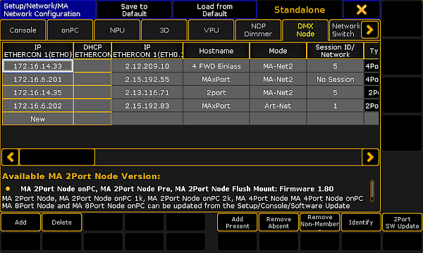
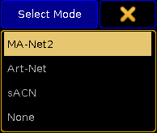
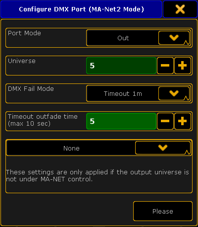

Configure the MA xPort Nodes in the Console
The configuration is a customized set of parameters you have set to run an xPort node.
Requirements:
- Add an MA xPort Node to the network configuration.
For more Information on adding an MA xPort see Add the MA xPort Node.
- Open the MA Network Configuration.
-Press Setup and tap MA Network Configuration.
- The window MA Network Configuration opens.
-Tap DMX Node.

MA Network Configuration – DMX Node
- Then, tap a cell in the column Mode.
-The pop-up Select Mode opens.
-Select one of the modes here.

Pop-up Select Mode
For more information on the four modes see Adding devices to your session.
- To configure the ports, tap a cell in one of the XLR columns.
-The pop-up Configure DMX Port opens.

Pop-up – Configure DMX Port (MA-Net2 Mode)
- Next, set the Port Mode by tapping the drop-down box.
-Set the port mode to "Out".
- Select the universe by tapping the minus or the plus sign.
-Enter universe 5.
For more information on the different port modes and merge settings of DMX data see Configure the DMX ports on MA devices.
Important:
The DMX Fail Mode can be set in DMX xPort Nodes from the version 3.3 on.
- Now, select a DMX Fail Mode.
-Tap the drop-down box and select for example the fail mode Timeout 1m.
For more information on the DMX Fail Mode see DMX Fail Mode in Configure DMX ports on MA devices.
- Set the outfade time.
-Enter 5 seconds using the plus or the minus sign.
- After you have adjusted the configuration settings, tap Please.
The configuration settings have now been applied to the node.